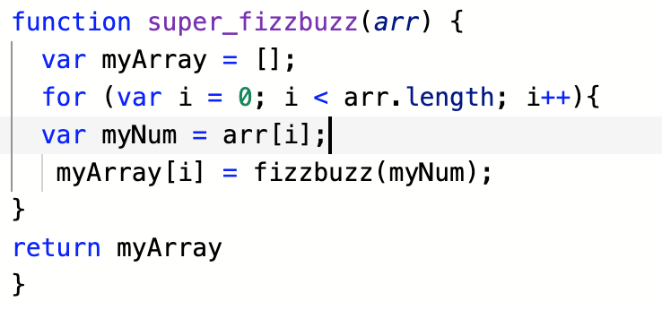

Problem solving techniques
Super fizzbuzz array;
my problem & my problem solving technique
My task is to make a Super fizzbuzz function, using an array. This is a common interview task and should be simple and solvable.
I did not understand why we are making an array. I just knew that the handbook was telling me to do so. I did not understand what the function of super fizzzbuzz was for, in comparison to the original function.
I started to write in pseudocode to put it into simple English. Basically at this point I was still using the handbook instructions.
If num is multiple of 15, print fizz buzz;
else if num is multiple of 3, print fizz;
else if num is multiple of 5, print buzz;
Super fizz buzz takes an array of integers, and loops over the array returning a fizz buzzed array.
This didn't help because though I understand it wants an array I didn’t know why or from where. “Are the two functions even related or is this a completely new step?” I didn't understand the question, let alone know how to figure out the answer.
I wanted to go straight to my facilitator for help because that is what I find the best way to get help. But for the sake of learning problem solving I wanted to avoid this method this time around, for when that option isn’t in place, I want to know more strategies that work for me.
Next I headed to Google. I googled super fizz buzz. In hopes that someone else would have it explained in English. At this point I could see the correct code that would work, but I didn't want to simply copy and paste it without understanding why it was used.
From reading through code notes on google about fizz buzz I talked the steps through very slowly with myself, pulling apart what each section meant.
I eventually understood that I needed to create an array to loop through the numbers against my fizzbuzz function.
I needed to make an array to hold the results.
I needed to check the results array with the fizz buzz function.
I needed to output the results of my super fizz buzz function.
I think…
From my research I wrote my function and it worked. However, there is still one line that I don't know why it is there. I just knew I needed it because that’s what I learnt from the internet. When I see my facilitator tomorrow I will ask her to go through this with me to solidify my understanding. I know from this point my problem is solved and I will know how and why everything was used.

How i felt & what I learnt
During this I felt like I was cheating. Just because I could see the answer online, didn't mean I knew and understood the answer. As much as I am wanting to be able to solve problems and write functions on my own I am not upset over the fact that I cannot do this yet. I know with time and practice this skill will come so I don't let it bother me. I am just looking forward to the point where my knowledge and skills are stronger.
I felt like a student who has been given an algebra paper with a simultaneous equation. But not being able to identify the method to solve it. Did it need to be solved using the elimination method or the substitution method. I could understand the method but didn’t know how or when to use it.
I am learning and doing well so far at keeping calm during problem solving. I am someone who is easily upset when I don’t understand something right away, but my new frame of mind on this particular learning journey has kept me away from that. These problem solving methods worked as I have working code, but still I work best with person to person explanation. I will be trying more problem solving methods along my learning journey.
Other problem solving techniques for next time
- Pseudocode - I love this! I would always do this automatically otherwise I can’t understand.
- Rubber ducky method - Slightly went into this this time with interpreting and explaining to myself what the code I found from research meant. I think it just comes hand in hand when stuck, you have to break it down to numpty level.
- Reading error messages - Helpful.
- Console.logging - I have not done this yet unless stated to, the programs we have been working on do it themselves don't they?
- Googling - works well to find code, but you need to understand it.
- Asking your peers for help - So helpful! My peers are awesome and kind. I try not to bug them when they are busy working hard on their own work.
- Asking coaches for help - Favourite method.
- Improving your process with reflection - Necessity. This is all brand new so this comes naturally each day as I think about what I learnt.